Simulated annealing is a very powerful method of combinatorial minimisation in the presence of many false minima. Simulated annealing has a rich literature, classical references are Metropolis et al. [36] and Kirkpatrick [37], more recent material can be found for example in Vidal [38]. Despite its many successful applications, using simulated annealing efficiently is still a bit of an art. We will here discuss some issues we have found worth dealing with in our particular minimisation problem. Since the detailed behaviour will be different for each cost function, we can only give some general guidelines.
The main idea behind simulated annealing is to interpret the cost function E as an energy in a thermodynamic system. Minimising the cost function is then equivalent to finding the ground state of a system. A glassy solid can be brought close to the energetically optimal state by first heating it and subsequently cooling it. This procedure is called ``annealing'', hence the name of the method. If we want to simulate the thermodynamics of this tempering procedure on a computer, we notice that in thermodynamic equilibrium at some finite temperature T, system configurations should be visited with a probability according to the Boltzmann distribution 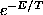 of the canonical ensemble. In Monte Carlo simulations, this is achieved by accepting changes of the configuration with a probability p=1 if the energy is decreased 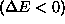 and 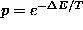 if the energy is increased, 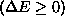. This selection rule is often referred to as the Metropolis step. In a minimisation problem, the temperature is the parameter in the Boltzmann distribution that sets its width. In particular, it determines the probability to go ``up hill'', which is important if we need to get out of false minima.
In order to anneal the system to the ground state of minimal ``energy'', that is, the minimum of the cost function, we want to first ``melt'' the system at a high temperature T, and then decrease T slowly, allowing the system to be close to thermodynamic equilibrium at each stage. If the changes to the configuration we allow to be made connect all possible states of the system, the updating algorithm is called ergodic. Although some general rigorous convergence results are available, in practical applications of simulated annealing some problem-specific choices have to be made. In particular, apart from the constraints and the cost function, one has to specify a method of updating the configurations and a schedule for lowering the temperature. In the following, we will discuss each of these issues.
Concerning the choice of cost function, we have already mentioned that there is
a large degeneracy in that many cost functions have an absolute minimum
whenever a given set of constraints if fulfilled. The convergence properties
can depend dramatically on the choice of cost function. Unfortunately, this
dependence seems to be so complicated that it is impossible even to discuss the
main behaviour in some generality. In particular, the weights 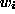 in
Eq.(22) are sometimes difficult to choose. Heuristically, we would like
to reflect changes in the I different constraints about equally, provided the
constraints are independent. Since their scale is not at all set by
Eq.(21), we can use the for this purpose. Whenever we have some
information about which kind of deviation would be particularly problematic
with a given test statistic, we can give it a stronger weight. Often, the
shortest lags of the autocorrelation function are of crucial importance, whence
we tend to weight autocorrelations by 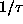 when they occur in sums. Also,
the  with larger
with larger  are increasingly ill-determined due to the
fewer data points entering the sums. As an extreme example, 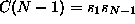
shows huge fluctuations due to the lack of self-averaging. Finally, there are
many more
are increasingly ill-determined due to the
fewer data points entering the sums. As an extreme example, 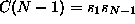
shows huge fluctuations due to the lack of self-averaging. Finally, there are
many more  with larger
with larger  than at the crucial short lags.
than at the crucial short lags.
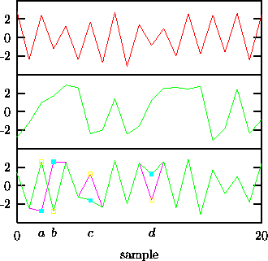
Figure: Building up correlations by pairwise permutation. Suppose we want to generate the strong anti-correlation present in the data (upper trace) by minimising 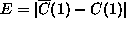. The annealing started with a random permutation (middle trace, E=1.129). At a given intermediate state (lower trace, E=0.256), exchanging the points a and b increases the cost to E=0.2744 while exchanging c and d creates negative correlation and reduces the cost to E=0.002.
A way to efficiently reach all permutations by small individual changes is by
exchanging randomly chosen (not necessarily close-by) pairs. How the
interchange of two points can affect the current cost is illustrated
schematically in Fig. 10. Optimising the code that computes and
updates the cost function is essential since we need its current value at each
annealing step -- which are expected to be many. Very often, an exchange of
two points is reflected in a rather simple update of the cost function. For
example, computing  for a single lag
for a single lag  involves O(N)
multiplications. Updating
involves O(N)
multiplications. Updating  upon the exchange of two points i<j only
requires the replacement of the terms 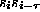, 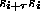,
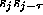, and 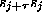 in the sum. Note that cheap updates are a
source of potential mistakes (e.g. avoid subtracting terms twice in the case
that 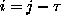) but also of roundoff errors. To ensure that the assumed cost
is always equal to the actual cost, code carefully and monitor roundoff by
computing a fresh cost function occasionally.
upon the exchange of two points i<j only
requires the replacement of the terms 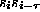, 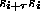,
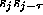, and 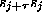 in the sum. Note that cheap updates are a
source of potential mistakes (e.g. avoid subtracting terms twice in the case
that 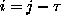) but also of roundoff errors. To ensure that the assumed cost
is always equal to the actual cost, code carefully and monitor roundoff by
computing a fresh cost function occasionally.
Further speed-up can be achieved in two ways. Often, not all the terms in a cost function have to be added up until it is clear that the resulting change goes up hill by an amount that will lead to a rejection of the exchange. Also, pairs to be exchanged can be selected closer in magnitude at low temperatures because large changes are very likely to increase the cost.
Many cooling schemes have been discussed in the literature [38]. We use an exponential scheme in our work. We will give details on the - admittedly largely ad hoc -- choices that have been made in the TISEAN implementation in Appendix A. We found it convenient to have a scheme available that automatically adjusts parameters until a given accuracy is reached. This can be done by cooling at a certain rate until we are stuck (no more accepted changes). If the cost is not low enough yet, we melt the system again and cool at a slower rate.